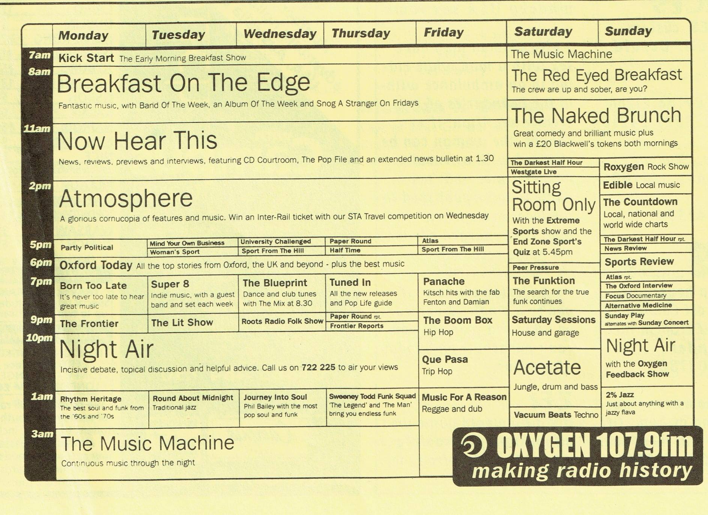
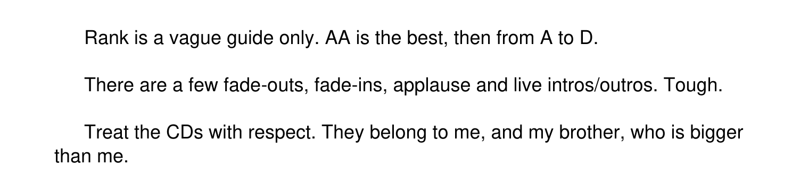
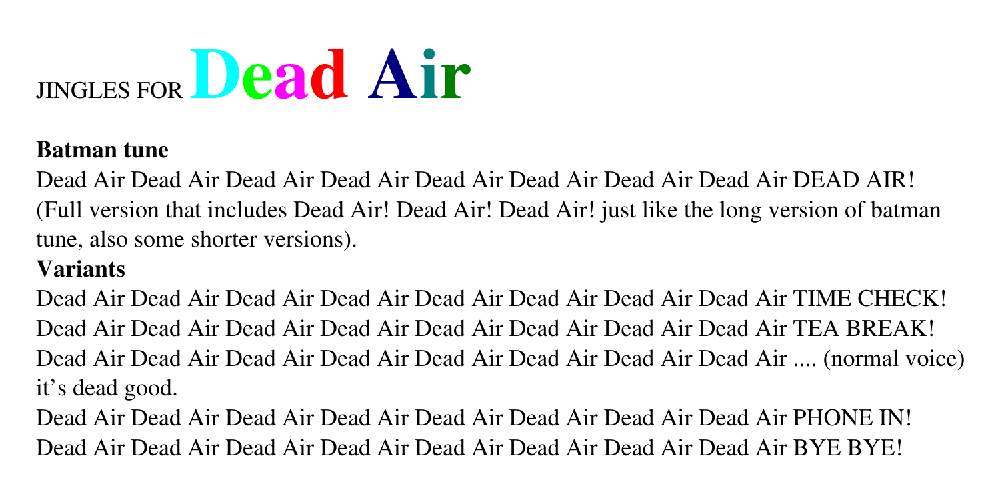
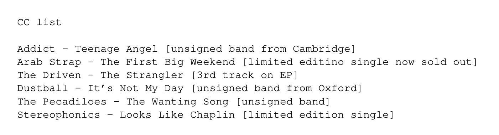
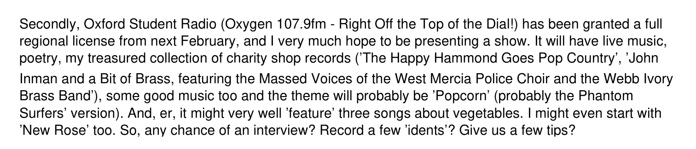
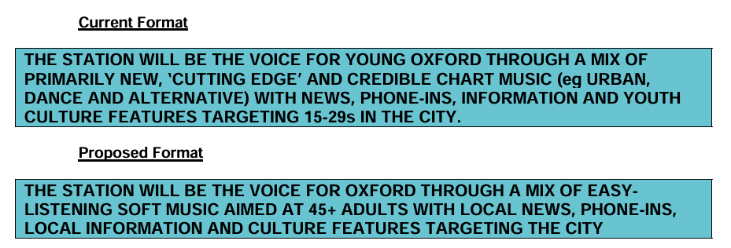

Oxford & Hammersmith · 1995–2002
Dead Air
‘An hour and a half of some blokes pissing about on the radio and playing records.’


Somebody had to bring the records
In 1995 I got to take part in a trial student radio licence in Oxford, thanks, I guess, to the engineer, Maxie Haddow-Allen, being at St Anne’s with me and a friend. Presumably there was some enormous gap where a music policy should have been, because they asked me to make a playlist out of my fairly obtuse record collection.
There were a hundred numbered CDs, some of them my brother Joe’s. I typed the tracks up, ranked them, made the labels, and asked everyone to tick what they’d played. ‘Rank is a vague guide only’, I wrote, before going to the trouble of writing a BASIC program to sort the things. Bix Beiderbecke, Pulp, and Jonathan Richman all got AA.
The trial lasted a month. Somehow I got to do what everybody would have liked – a long graveyard-shift show, blatantly ripping off Mark Radcliffe’s Out on Blue Six, with my records and people from the Catweazle Club coming in to play and read poetry. Eoin Quiery was a friend. George Kirby, a Catweazle regular and an incredible Dylan impersonator, went on to become a staple of both Oxygen and Oxford TV. The club was where I’d go and sit on the floor and listen to them.


Look through the CDs · My Catweazle Club piece · The club’s own history
Rufus, Jax, and the phone box
Oxygen went on air full time at 1.07 pm on Valentine’s Day. It was the first UK student station to win a full FM licence, and you could listen on the early web as well. By then somebody had actually given Dead Air an hour and a half on Sunday afternoons. The first running order has us playing ‘Popcorn’, The Undertones’ ‘Teenage Kicks’, and Television’s ‘Venus’ before we get round to explaining the programme. The ‘Popcorn’ I was after was the Phantom Surfers’ version. Surf guitar, with that lovely biros-through-the-amp-speaker sound I remembered from Radcliffe. In my letter to him I said ‘probably the Phantom Surfers’ version’. The running order just says ‘Popcorn’.
Hear the Phantom Surfers play ‘Popcorn’ · The 1992 LP sleeve
‘Rufus’ was Fraser Sharp (one of those is a pseudonym), my undermining Nietzschean sidekick with more than a hint of Muppet-like chaos in him. Maxie was often there too – professional, smooth, funny, and quite capable of making the rest of us sound like we knew what we were doing. He became the station’s mainstay employee and went on to a long career in radio production. Jax was John Massey, capable of being genuinely madcap and inspired. I can still hear his Danish chef. More Muppets.
‘BT Phones Home’ survived the occasion when I rang my mum and she, unaware she was on air, dropped the F-bomb. We also rang the phone box outside the station. Nobody ever answered. This did not, apparently, disqualify it as a feature.


One Sunday I played Jimmy Cliff’s ‘Many Rivers to Cross’. Jasper rang in and asked, ‘Why are all your songs so miserable?’ Which made me sad.
The likeliest date is Sunday 27 April 1997. It’s on two of my April lists. On the second I’d put an asterisk beside it, and saved the file at 3.55 pm, five minutes before we were due on air.
The April music sheets · The starred list
My brother Joe became music director the next year. He went at it rather more realistically than I’d gone about the test licence, and on into a career in the music industry. His December 1996 pilot playlist worked out what an hour would sound like ahead of the full launch. Four A-list songs, two Bs, one C. The CC category made room for unsigned bands and limited releases. Oxford’s Dustball made it in with ‘It’s Not My Day’.


Running orders, jingles, and show notes · The Independent at the launch
Christmas, obviously
The plan for June was a Dylan show in which nobody mentioned Dylan, a farewell show which turned out not to be the farewell show, and a Christmas special. Our proposed Christmas single had me doing ‘Eternal Flame’ in the style of William Shatner, backed with a Rufus Doors orchestral version of ‘Every Loser Wins’ (orchestral because Rufus had absented hisself). Sadly he’d chosen to leave town before we could record the single. On the morning of 22 June the station confirmed Dan Lester would be on the desk from 3 to 5 pm.
What I remember is my rather depressive solo Christmas party. Also my horror on the final show as my pre-recorded music and poetry blinked out, one by one, from the fancy ENCO-DAD system. Maxie had picked that moment to clear up the hard drive for the end of term.
I’ve paid fulsome tribute to Mark Radcliffe many times, including a heartfelt ‘amusing’ letter wot I rote him. I remembered it as ’97. The surviving file is from September ’96, when I was still angling for the show. I asked for an interview, some idents, or the name of the third song about vegetables. He’s never replied, the sod.


Read my letter to Mark Radcliffe · Joe’s Out On Blue Six playlist on Spotify · Radcliffe on starting Out on Blue Six
A week out on the tapes
Oxygen struggled for money and was eventually sold. In 1999 the Radio Authority wanted to hear what the station had broadcast on 1 March. I’d remembered the complaint as something about not playing enough news. It was actually about the debate, discussion, science, and arts programmes the licence called for.
There was no tape for 1 March. On 8 March the station broadcast as though it were a week earlier, recorded it, and sent that in. A snag. Stanley Kubrick and Joe DiMaggio were both alive on 1 March, which made the news of their deaths rather difficult to explain. Asked for the 8 March output, the station sent in 15 March. The fine was £20,000 and the licence lost two years.
Reminds me of Consolidated’s ‘College Radio’.


Listen to ‘College Radio’ · Radio Authority decision · The news that gave it away · Ofcom’s station history
One in the morning again
A few years later Jax and Rufus came back for Riverside FM. We sent John out into Hammersmith in the middle of the night and told him what to say to strangers. At seven in the morning I was due back with the arts news. I still had my day job working for the Mayor. God, they put up with a lot from me.